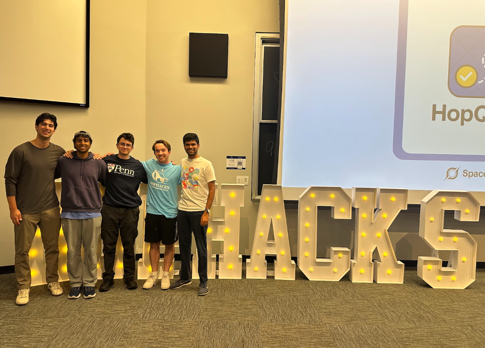
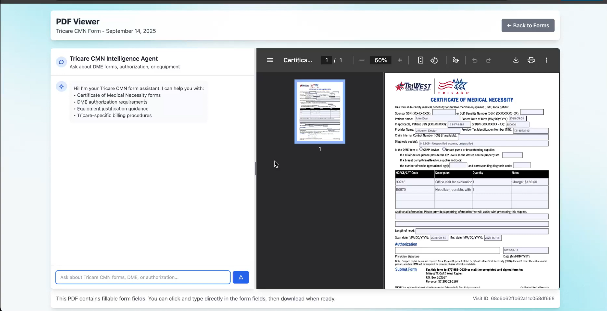
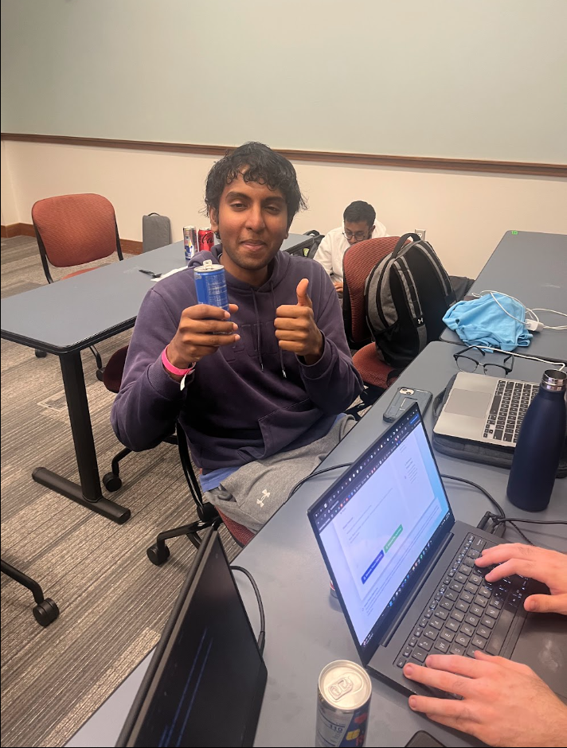

Competition Overview
- Placement: 2nd of 102 teams Overall & 2nd Place in Healthcare track.
Project Links
Technologies Used
- Redbull (zero sugar)
- Gemini
- Flask
- Python
- JavaScript
Details
For this project I worked with two new teammates: Jack Deye (UCLA) and Saketh Poori (SFU). We hadn't met before HopHacks, and it was a really fun and collaborative 36 hours. I'm pretty proud of the work we did and we've done our best to keep in touch since, Saketh and I were able to meet up at HackHarvard a couple months later which was a lot of fun.

MedRelay was built to reduce the administrative burden that healthcare providers face when completing insurer claim and prior authorization forms. The system listens to natural doctor-patient conversations, transcribes them, and turns the conversation into structured information that can be mapped into standardized medical paperwork.

A big part of our project was focusing on a human-in-the-loop workflow rather than replacing providers. It extracts key medical details, identifies outcomes like prescriptions, referrals, and tests, and then fills the appropriate form fields so a provider can review and submit a draft quickly with fewer errors.
